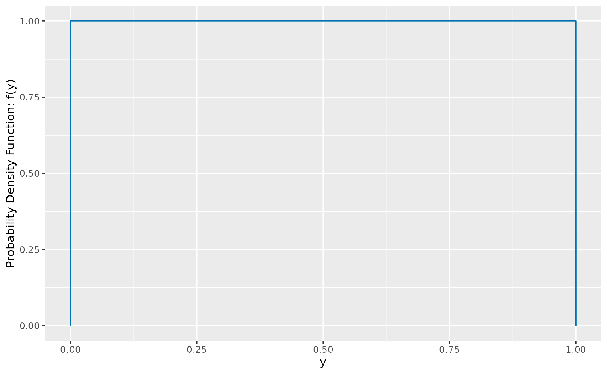

Code
dist_uniform(0,1) |>
gg_density() +
labs(x = "y", y = "Probability Density Function: f(y)")

In this book, we take a probabilistic perspective on anomaly detection. That is, we are interested in the likelihood of each observation. So before we discuss any anomaly detection methods, we first need to discuss probability distributions. Some of this material (especially Section 2.1) should be familiar to most readers, but is covered here as a refresher, and to introduce some notation that will be used in later chapters.
We are interested in data obtained from a range of possible sample spaces in this book, but for now we will assume that all data are real numbers, and come from continuous probability distributions. Later we will consider other types of data, including discrete data, data that are functions, images, video, networks, text, or even probability distributions as data objects. But for the first half of the book, we will only deal with numerical data.
Let Y denote a continuous random variable taking values in \mathbb{R} (the real numbers), with its cumulative probability distribution (cdf) given by F(y) = \text{Pr}(Y \le y). \tag{2.1} This function is monotonically increasing in y, and takes values between 0 and 1. Because Y is a continuous random variable, F(y) is a continuous function of y. The probability density function (pdf) is defined as the derivative of the cdf, so f(y) = F'(y), assuming the derivative exists at y. The pdf is non-negative, and integrates to 1.
The probability that Y lies in the interval [a,b] is given by \text{Pr}(a \leq Y \leq b) = \int_a^b f(y)dy = F(b) - F(a).
The expected value (or mean) of Y is given by \text{E}(Y) = \int_{-\infty}^\infty y f(y)dy, and the variance is given by \text{Var}(Y) = \text{E}[(Y-\text{E}(Y))^2] = \int_{-\infty}^\infty (y-\text{E}(Y))^2 f(y)dy. The standard deviation is the square root of the variance.
The simplest continuous distribution is the Uniform distribution, which takes two parameters, a and b, and has pdf given by f(y;a,b) = \begin{cases} \frac{1}{b-a} & \text{if } a \leq y \leq b, \\ 0 & \text{otherwise}. \end{cases} Thus, it can only take values between a and b, and every value in that range is equally likely. We refer to a Uniform random variable with parameters a and b as Y \sim \text{U}(a,b). It has mean (a+b)/2 and variance (b-a)^2/12.
The U(0,1) distribution is shown in Figure 2.1.
dist_uniform(0,1) |>
gg_density() +
labs(x = "y", y = "Probability Density Function: f(y)")The most widely used continuous distribution is the Normal distribution, also known as the Gaussian distribution, named after the German mathematician Carl Friedrich Gauss. It takes two parameters, the mean \mu, and the variance, \sigma^2. The pdf is given by f(y; \mu, \sigma) = \frac{1}{\sigma\sqrt{2\pi}} \exp\left(-\frac{(y-\mu)^2}{2\sigma^2}\right). We refer to a Normal random variable with mean \mu and variance \sigma^2 as Y \sim \text{N}(\mu, \sigma^2). When \mu=0 and \sigma^2=1, we call it the standard Normal distribution N(0,1), and denote the pdf as \phi(y) and the cdf as \Phi(y).
Three Normal distributions are shown in Figure 2.2.
dist_normal(c(0, 0, 1), c(1, 2, 1)) |>
gg_density() +
labs(x = "y", y = "Probability Density Function: f(y)")The \chi^2 (or chi-squared) distribution takes one parameter, the degrees of freedom k. The pdf is given by f_k(y) = \frac{y^{k/2-1}e^{-y/2}}{2^{k/2}\Gamma(k/2)}, where \Gamma(u) = \int_0^\infty x^{u-1}e^{-x}dx is the gamma function. For positive integers u, \Gamma(u) = (u-1)!. The \chi^2 distribution arises naturally as the sum of the squares of k independent standard Normal random variables. We refer to a \chi^2 random variable with k degrees of freedom as Y \sim \chi^2_k. It has mean k and variance 2k.
Three \chi^2 distributions are shown in Figure 2.3.
dist_chisq(c(1, 2, 5)) |>
gg_density() +
labs(x = "y", y = "Probability Density Function: f(y)") +
coord_cartesian(ylim = c(0, 1)) +
scale_color_discrete(labels = c(
latex2exp::TeX("$\\chi^{~2}_{~~1}$"),
latex2exp::TeX("$\\chi^{~2}_{~~2}$"),
latex2exp::TeX("$\\chi^{~2}_{~~5}$")
))The t distribution was first described by the English statistician and chemist, William Gosset, who worked for the Guinness brewery in Dublin, Ireland, and published under the pseudonym “Student”. It arises naturally as the ratio Z/\sqrt{S/k}, where Z\sim \text{N}(0,1) and S\sim \chi^2_k are independent, and is commonly used in variations of t-tests. It takes one parameter, the degrees of freedom k. The pdf is given by f_k(y) = \frac{\Gamma\left(\frac{k+1}{2}\right)}{\sqrt{k\pi}\Gamma\left(\frac{k}{2}\right)} \left(1 + \frac{y^2}{k}\right)^{-\frac{k+1}{2}}. We refer to a t random variable with k degrees of freedom as Y \sim \text{t}_k. The t distribution is similar in shape to the standard Normal distribution, but has heavier tails. When k=1, the t distribution is known as the “Cauchy” distribution (after the French mathematician Augustin-Louis Cauchy), which has undefined mean and variance. For k=2, it has mean 0 and infinite variance. For k > 2, it has mean 0 and variance k/(k-2). When k\rightarrow\infty, the t distribution converges to the standard Normal distribution.
Three t distributions are shown in Figure 2.4.
dist_student_t(c(1, 5, 99)) |>
gg_density(ngrid = 10001) +
coord_cartesian(xlim = c(-8,8)) +
labs(x = "y", y = "Probability Density Function: f(y)") +
scale_color_discrete(labels = c(
latex2exp::TeX("$t_{~1}$"),
latex2exp::TeX("$t_{~5}$"),
latex2exp::TeX("$t_{~99}$")
)) +
theme(legend.text = element_text(hjust = 0))The \Gamma (or Gamma) distribution is a generalization of the \chi^2 distribution, and is used in many statistical models. There are several parameterizations. Here, we use the shape/rate parameterization which uses the shape \alpha and the rate \beta. The pdf is given by f(y; \alpha, \beta) = \frac{\beta^\alpha}{\Gamma(\alpha)} y^{\alpha-1}e^{-\beta y}. We refer to a \Gamma random variable with shape \alpha and rate \beta as Y \sim \Gamma(\alpha, \beta). The mean and variance of a \Gamma random variable are \alpha/\beta and \alpha/\beta^2 respectively. The \chi^2_k distribution is a special case of the \Gamma distribution, with \alpha = k/2 and \beta = 1/2. The Exponential distribution is another special case of the \Gamma distribution, with \alpha = 1. The sum of k independent Exponential random variables with rate \beta has a \Gamma(k, \beta) distribution.
Three \Gamma distributions are shown in Figure 2.5.
dist_gamma(c(1, 1, 2), c(1, 2, 1)) |>
gg_density() +
labs(x = "y", y = "Probability Density Function: f(y)")A mixture distribution is a distribution that is formed by mixing together other distributions. That is, a sample value is drawn from a mixture distribution by first randomly selecting one of the component distributions with some specified probability, and then sampling from the selected component distribution.
The pdf of a mixture distribution is given by the weighted sum of the pdfs of the component distributions, where the weights correspond to the probability of sampling from each component. For example, suppose Y is a mixture of two Normal distributions, with parameters (\mu_1,\sigma_1^2) and (\mu_2,\sigma_2^2), where the first distribution has weight p and the second has weight 1-p. Then the resulting pdf of the mixture distribution is given by f(y) = pf(y;\mu_1,\sigma_1^2) + (1-p)f(y;\mu_2,\sigma_2^2). The mean and variance of the mixture distribution are given by \text{E}(Y) = p\mu_1 + (1-p)\mu_2, and \text{Var}(Y) = p\sigma_1^2 + (1-p)\sigma_2^2 + p(1-p)(\mu_1 - \mu_2)^2, respectively.
An example is shown in Figure 2.6, where \mu_1 = -2, \mu_2 = 2, \sigma_1^2 = \sigma_2^2 = 1, and p=1/3.
dist_mixture(
dist_normal(-2, 1),
dist_normal(2, 1),
weights = c(1/3, 2/3)
) |>
gg_density() +
gg_density_layer(dist_normal(-2,1), linetype = "dashed", scale = 1/3) +
gg_density_layer(dist_normal(2,1), linetype = "dashed", scale = 2/3) +
labs(x = "y", y = "Probability Density Function: f(y)")This is an example of a multimodal density function, with modes at -2 and 2. The mixture distribution is not Normal, even though both component distributions are Normal. The mixture distribution is also not symmetric, even though both component distributions are symmetric.
A good introduction to other probability distributions on real sample spaces is provided by Forbes et al. (2011), with more advanced treatments in Johnson, Kotz, and Balakrishnan (1994) and Johnson, Kotz, and Balakrishnan (1995).
The central limit theorem (CLT) is one of the most important results in statistics. There are several variations of the theorem; the simplest version states that the sum of a large number of iid random variables, with finite mean and variance, is approximately Normally distributed.
If Y_1,\dots,Y_n are iid random variables with mean \mu and variance \sigma^2 < \infty, then \frac{\sum_{i=1}^n Y_i - n\mu}{\sigma\sqrt{n}} \longrightarrow \text{N}(0,1).
This is a remarkable result as it does not require any assumptions about the underlying distribution of the random variables Y_1,\dots,Y_n, other than that they have finite mean and variance. It is also a useful result, as it allows us to use the Normal distribution to approximate the distribution of many statistics.
For example, the sample mean (or average), is simply the sum of the observations divided by the sample size. So by the CLT, for a large sample size, the sample mean will have a Normal distribution. That is, if the observations come from a distribution with mean \mu and variance \sigma^2, then the sample mean will have distribution \text{N}(\mu, \sigma^2/n) when n is large, regardless of the underlying distribution of the observations.
Variations on the theorem allow the variables Y_1,\dots,Y_n to be independent but not necessarily identically distributed, or to be weakly dependent.
It is because of the CLT that a \chi^2_k distribution is approximately Normal for large k. (Recall that the sum of k independent N(0,1) random variables has a \chi^2_k distribution.)
Similarly, a \Gamma(\alpha,\beta) distribution is approximately Normal for large \alpha. (Recall that the sum of \alpha independent \Gamma(1,\beta), or Exponential, random variables has a \Gamma(\alpha,\beta) distribution.)
Wasserman (2004) provides some further details and examples of the CLT.
A quantile of a continuous univariate distribution is a point that divides the sample space into two regions, based on the probability of observations falling below or above the quantile value. If Q(p) denotes the quantile corresponding to probability p, then P(Y \le Q(p)) = p and P(Y > Q(p)) = 1-p.
dist <- dist_chisq(5)
q80 <- quantile(dist, p = 0.8)
x5 <- tibble(
x = seq(0, 19, l = 501),
y = unlist(density(dist, at = x))
)
x5 |>
ggplot(aes(x = x, y = y)) +
geom_line() +
geom_area(data = x5 |> filter(x < q80), fill = "#0072B2") +
geom_area(data = x5 |> filter(x >= q80), fill = "#D55E00") +
labs(x = "y", y = "Probability Density Function: f(y)") +
scale_x_continuous(
breaks = c(seq(0, 20, by = 5), q80),
labels = c(seq(0, 20, by = 5), paste0(round(q80, 2), "\nQ(0.8)")),
minor_breaks = NULL
) +
geom_label(
data = tibble(x = c(4, 10), y = 0.01),
aes(x = x, y = y, label = paste("Prob =", c(0.8, 0.2)))
)The quantiles of a continuous distribution are given by the inverse of the cumulative distribution function, Q(p) = F^{-1}(p).
Some quantiles are given special names. The p=0.5 quantile is called the median. The p=0.25 and p=0.75 quantiles are called the lower and upper quartiles respectively. The deciles are defined when p=0.1,0.2,\dots,0.9, while the percentiles are defined with p=0.01,0.02,\dots,0.99.
The “interquartile range” (IQR) is the difference between the upper and lower quartiles. It is a measure of the spread of the distribution, and is often used as a robust alternative to the standard deviation. For a Normal distribution, the standard deviation is equal to 1.349 times the IQR.
The quantile functions for a standard Normal distribution, a \text{t}_5 distribution, and a \chi^2_5 distribution are shown in Figure 2.8.
p <- seq(0, 1, l = 501)
c(dist_normal(0, 1), dist_student_t(5), dist_chisq(5)) |>
quantile(p = p) |>
as_tibble(.name_repair = "unique") |>
mutate(p = p) |>
tidyr::pivot_longer(-p, names_to = "Distribution", values_to = "Q") |>
ggplot(aes(x = p, y = Q, col = Distribution)) +
geom_line() +
labs(x = "p", y = "Quantile function: Q(p)") +
scale_color_discrete(labels = c(
latex2exp::TeX("N(0,1)"),
latex2exp::TeX("$t_{~5}$"),
latex2exp::TeX("$\\chi^{~2}_{~~5}$")
)) +
theme(legend.text = element_text(hjust = 0))The sample quantiles of a data set are estimates of the quantiles of the underlying distribution. Suppose we have data on a single variable, \{y_1,\dots,y_n\}, and we want to estimate a quantile Q(p). There are a surprising number of ways this can be done, and there is no accepted standard approach.
quantile() functionThe R function quantile() includes nine variations, based on Hyndman and Fan (1996). Which variation you use makes little difference except for tiny data sets where n is small, or when you are interested in the tails when p is close to 0 or 1. However, for anomaly detection, we are usually interested in the tails, so we will need to use a method that works well for extreme values of p.
Let’s compare two of the possible variations available in quantile(): type = 7 which is the default method, and type = 8 which was the recommendation of Hyndman and Fan (1996) due to it having smaller bias.
Let y_{(k)} denote the kth largest observation, k=1,\dots,n. These ordered values are known as “order statistics”. Then the sample quantile \hat{Q}(p) is given by linear interpolation between consecutive order statistics. That is, if k^+= p(n+1-2a) +a for some constant a, then \hat{Q}(p) = (1-\gamma) y_{(k)} + \gamma y_{(k+1)}, where k = \lfloor k^+ \rfloor is the integer part of k^+ and \gamma = k^+ - k is the remainder. Most of the different methods for estimating quantiles differ only in the value of a.
type = 7 is used, a = 1, so k^+ = p(n-1) + 1.type = 8 is used, a= 1/3, so k^+ = p(n+1/3) + 1/3.For any value of a, if p=0.5 then k^+ = (n+1)/2, and we obtain the sample median:
For large n, the sample quantile should provide a good estimate of the true quantile, so that \hat{Q}(p) \approx Q(p). We can study the bias of the estimator by simulating from a known distribution, and comparing the sample quantiles to the true quantiles. In Figure 2.9, we do this for samples drawn from a N(0,1) distribution. The estimated bias is based on repeating the exercise 10,000 times and averaging the results.
avequantile <- function(n, p, m) {
Q7 <- Q8 <- numeric(length(p))
for (i in seq(m)) {
random_sample <- rnorm(n)
Q7 <- Q7 + quantile(random_sample, prob = p, type = 7) / m
Q8 <- Q8 + quantile(random_sample, prob = p, type = 8) / m
}
tibble(n = n, p = p, Q7 = Q7, Q8 = Q8)
}
qbias <- tibble(n = c(100, 1000)) |>
purrr::pmap_dfr(~ avequantile(
n = .x,
p = seq(0.002, 0.998, by = 0.001), m = 10000
)) |>
tidyr::pivot_longer(Q7:Q8, names_to = "type", values_to = "Q") |>
mutate(
type = paste("type = ", readr::parse_number(type)),
Qtrue = qnorm(p),
bias = Q - qnorm(p)
)
qbias |>
ggplot(aes(x = p, group = type)) +
geom_line(aes(y = bias, col = type, linetype = "n = 100"),
data = qbias |> filter(n == 100)
) +
geom_line(aes(y = bias, col = type, linetype = "n = 1000"),
data = qbias |> filter(n == 1000)
) +
labs(
x = "Probability p",
y = "Bias of sample quantile",
) +
guides(
linetype = guide_legend(title = "Sample size"),
col = guide_legend(title = "Quantile method")
)type = 7 quantile method, while the blue line shows the bias of the preferred type = 8 quantile method.
Clearly, the type = 8 sample quantile gives much better results than the default type = 7 method, especially when p is close to 0 or 1. Consequently, we will always use type = 8 when computing sample quantiles in the remainder of this book.
We can calculate some of the sample quantiles for Test cricket batting averages, considering only those batters who have played at least 20 innings. These values are easily computed using the quantile() function with argument type = 8.
cricket_batting |>
filter(Innings > 20) |>
pull(Average) |>
quantile(prob = c(0, 0.25, 0.50, 0.75, 0.99, 1), type = 8)#> 0% 25% 50% 75% 99% 100%
#> 2.00 16.59 26.63 36.72 58.50 99.94batave <- cricket_batting |>
filter(Innings > 20)
p <- c(0.25, 0.5, 0.75, 0.99)
Qs <- quantile(batave$Average, prob = p, type = 8)
batave |>
ggplot(aes(x = Average, y = 1)) +
geom_jitter(width = 0, alpha = 0.5) +
geom_vline(xintercept = Qs, col = "#D55E00") +
scale_y_discrete() +
scale_x_continuous(
breaks = c(0, Qs, 100),
labels = c("0", sprintf("%2.2f", Qs), "100"),
) +
scale_x_continuous(
breaks = c(0, Qs, 100),
labels = c("0", sprintf("%2.2f", Qs), "100"),
sec.axis = dup_axis(
name = "",
breaks = Qs,
labels = latex2exp::TeX(sprintf("\\hat{Q}(%2.2f)", p))
)
) +
labs(y = "", x = "Career batting average")Half of all batters average above 26.63, while only 1 in 100 batters have an average above 58.50.
With a large sample size n, the sample quantile \hat{Q}(p) has an approximate Normal distribution, \hat{Q}(p) \approx \text{N}\left(Q(p), \frac{p(1-p)}{n f^2(Q(p))}\right) \tag{2.2} where f(y) is the density of the underlying distribution (Van der Vaart 2000, p308). This is an asymptotic result, that assumes np is large, and holds for all types of sample quantiles.
A highest density region is defined as the region of the sample space where the density is higher than a given threshold (Hyndman 1996). It is commonly specified using the probability mass that the HDR contains. For example, a 95% HDR is the region of the sample space that contains 95% of the probability mass, and where every point inside the region has higher density than any point outside the region.
For the univariate random variable Y, with a smooth, continuous density function f, the 100(1-\alpha)% HDR is the set R_\alpha = \{y: f(y) \ge f_\alpha\} \tag{2.3} where P(Y \in R_\alpha) = 1-\alpha.
A useful property of the HDR is that it is the smallest region containing 1-\alpha of the probability mass.
For a symmetric unimodal distribution such as the Normal or t distributions, the HDR is an interval centred on the mean (which is equal to the median), with the ends given by the \alpha/2 and 1-\alpha/2 quantiles. For a skewed unimodal distribution such as the \chi^2 or Gamma distributions, the HDR is also an interval, but it is not centred on the mean (or median), and the ends are not given by symmetric quantiles. For example, Figure 2.11 shows two 90% regions for a \chi^2_5 distribution. The one shown in blue is based on the 0.05 and 0.95 quantiles, while the orange region is the 90% HDR. Notice that both are intervals, and that the orange interval is smaller than the blue interval. The value of the density at the ends of the HDR is the same, and is given by f_\alpha.
dist <- dist_chisq(5)
interval1 <- quantile(dist, p = c(0.05, 0.95)) |> unlist()
interval2 <- hdr(dist, size = 90) |> unlist()
falpha <- density(dist, at = interval2[1])
gg_density(dist) +
labs(x = "y", y = "Probability Density Function: f(y)") +
geom_line(
data = tibble(x = interval1), aes(x = x, y = -0.002),
col = "#0072B2", linewidth = 2
) +
geom_line(
data = tibble(x = interval2[1:2]), aes(x = x, y = 0.001),
col = "#D55E00", linewidth = 2
) +
geom_line(
data = tibble(x = rep(interval2[1], 2), y = c(0, falpha)),
aes(x = x, y = y), col = "#D55E00", linetype = "dashed"
) +
geom_line(
data = tibble(x = rep(interval2[2], 2), y = c(0, falpha)),
aes(x = x, y = y), col = "#D55E00", linetype = "dashed"
) +
geom_hline(aes(yintercept = falpha), col = "#D55E00", linetype = "dashed") +
scale_y_continuous(
breaks = c(seq(0, 0.15, by = 0.05), falpha),
minor_breaks = NULL,
labels = latex2exp::TeX(c(seq(0, 0.15, by = 0.05), "$f_\\alpha$")),
)For a multimodal distribution, the HDR may be a union of intervals. For example, the HDR for the mixture shown in Figure 2.6 is displayed in Figure 2.12.
dist <- dist_mixture(dist_normal(-2,1), dist_normal(2, 1), weights = c(1/3, 2/3))
interval1 <- quantile(dist, p = c(0.05, 0.95)) |> unlist()
interval2 <- hdr(dist, size = 90) |> unlist()
hdrinterval1 <- interval2[c("lower1", "upper1")]
hdrinterval2 <- interval2[c("lower2", "upper2")]
falpha <- density(dist, at = hdrinterval2[1])
p <- gg_density(dist) +
labs(x = "y", y = "Probability Density Function: f(y)") +
geom_line(
data = tibble(x = interval1), aes(x = x, y = -0.0028),
col = "#0072B2", linewidth = 2
) +
geom_line(
data = tibble(x = hdrinterval1), aes(x = x, y = 0.0018),
col = "#D55E00", linewidth = 2
) +
geom_line(
data = tibble(x = hdrinterval2), aes(x = x, y = 0.0018),
col = "#D55E00", linewidth = 2
)
for (edge in interval2[1:4]) {
p <- p + geom_line(
data = tibble(x = rep(edge, 2), y = c(0, falpha)),
aes(x = x, y = y), col = "#D55E00", linetype = "dashed"
)
}
p +
geom_hline(aes(yintercept = falpha), col = "#D55E00", linetype = "dashed") +
scale_y_continuous(
breaks = c(seq(0, 0.2, by = 0.1), falpha),
minor_breaks = NULL,
labels = latex2exp::TeX(c(
seq(0, 0.2, by = 0.1),
"$f_\\alpha$"
)),
)Many anomaly detection methods will need an estimate of the centre and the spread of the distribution of data. The usual estimators are the sample mean and sample standard deviation, but these are sensitive to outliers, so we will need to use alternatives.
For univariate data, the sample median provides a convenient robust estimator of the centre of the distribution. A simple robust estimator of the spread is the IQR, defined as \text{IQR} = \hat{Q}(0.75) - \hat{Q}(0.25). \tag{2.4} Another commonly used robust estimator of spread is the median absolute deviation (MAD), given by \text{MAD} = \text{median}(|y_i - \text{median}(y)|). \tag{2.5} If our data come from a Normal distribution, then the standard deviation is given by s = 0.7413\times\text{IQR} = 1.4826\times\text{MAD}.
A third robust estimator of the spread is the Q_n estimator (Rousseeuw and Croux 1993), based on pairwise differences between observations. Let \Delta_{ij} = |y_i-y_j| denote the absolute difference between the ith and jth observations, for 1 \le i < j \le n. There are n(n-1)/2 such differences. Let \Delta_{(k)} be the kth largest of these differences, where k = {\lfloor n/2\rfloor + 1 \choose 2} and \lfloor n/2\rfloor is the integer part of n/2. Thus, \Delta_{(k)} is approximately equal to the first quartile of the absolute pairwise differences. Then Q_n = d_n\Delta_{(k)}, where d_n is a constant that depends on n and is designed to scale Q_n so that it provides an estimate of the standard deviation for a Normal distribution. For large n, d_n = 2.219. While the IQR and MAD estimators are somewhat simpler and easier to understand, the Q_n estimator has some useful properties (as discussed in Rousseeuw and Croux 1993).
All three of these robust estimators of the standard deviation can be computed using the robustbase package, with the functions s_IQR(), s_mad(), and s_Qn() respectively.
Unlike the examples discussed in Section 2.1, we will not normally know what distribution our data come from, and they will almost never be from a standard parametric distribution such as a Normal, t, \chi^2 or Gamma distribution. Instead, we will need to estimate the probability density function from the data. Kernel density estimation is the most popular method for nonparametric estimation of a probability density function.
Suppose we have n univariate observations, \{y_1,\dots,y_n\}, which are independent draws from a probability distribution, and we want to estimate the underlying probability density function. The kernel density estimate (see Wand and Jones 1995) is given by \hat{f}(y) = \frac{1}{n} \sum_{i=1}^n K_h(y-y_i), \tag{2.6} where K_h is a “kernel” function and h is a bandwidth to be determined. We will use kernel functions that are themselves probability density functions with mean 0 and standard deviation h. Thus, a kernel density estimate is a mixture distribution with n components, each of which is a kernel function centred at one of the observations. For example, the “Gaussian” kernel is K_h(u) = \exp(-u^2/h^2)/(h\sqrt{2\pi}), equal to the Normal density function with mean zero and standard deviation h. Another popular kernel is the quadratic Epanechnikov kernel given by K_h(u) = [1-u^2/(5h^2)]_+ / (h4\sqrt{5}/3), where x_+ = \max(x,0). In our examples, we will use the Gaussian kernel.
Now we will apply Equation 2.6 to the first ten Old Faithful eruption durations from 2021 that are in the oldfaithful data set. The kernel density estimate can be visualized as a sum of kernel functions centred over each observation with width determined by h, and height given by K_h(0)/n.
Let’s suppose K_h is a Gaussian kernel and let h = 16 (I will explain this choice below). Then we get the following set of kernel functions.
The vertical ticks show the location of the ten observations, while the grey lines show \frac{1}{n}K_h(y - y_i) for i=1,\dots,n.
These functions are then added together, as in Equation 2.6, to give the density estimate.
We made two choices when producing this estimate: the value of h and the type of kernel K_h. If either was replaced with a different choice, the estimate would be different. For large data sets, it does not make much difference which kernel function is used.
The choice of h is more difficult and will change the shape of the density estimate substantially. Here are three versions of the density estimate with bandwidths given by h=5, h=15 and h=40.
When h is too small, the density estimate is too rough, with many peaks and troughs. When h is too large, the density estimate is too smooth and we fail to see any features in the data. A popular choice for h is the “normal reference rule” (Silverman 1986, p45) given by
h = 1.059 s n^{-1/5}
\tag{2.7} but because we want our results to be robust to outliers, we will replace s by the robust Q_n estimate, resulting in
h = 1.059 Q_n n^{-1/5}.
\tag{2.8} We will call this the “robust normal reference rule”; it is implemented in the function kde_bandwidth(). For the 10 observations in the example above, it gives h = 16, which is the value we used.
This example using only 10 observations was purely to illustrate the method. Let’s now estimate a kernel density estimate for the full data set (other than that one pesky duration of 2 hours).
We will use the dist_kde() function, which uses the Gaussian kernel, and by default sets the bandwidth using the robust normal reference rule (Equation 2.8) via the kde_bandwidth() function.
of <- oldfaithful |>
filter(duration < 7000)
of_density <- dist_kde(of$duration)
of_density |>
gg_density() +
geom_rug(aes(x = duration), of) +
labs(x = "Duration (seconds)")As this is a much bigger data set (with 2260 observations), the selected bandwidth is smaller and is now h = 5.01. Here the estimate has clearly identified the two groups of eruptions, one much larger than the other. The extreme observation of 1 second, and the unusual observations between 140 and 180 seconds are in the areas of low density. Later we will use density estimates at each observation to identify anomalous points.
The statistical properties of the kernel density estimator (Equation 2.6) have been extensively studied, and are described in several books including Wand and Jones (1995) and Scott (2015).
An important asymptotic result is that the mean square error (MSE) of \hat{f}(y) is \text{E}\left[(\hat{f}(y) - f(y))^2\right] \approx \frac{1}{4}h^4[f''(y)]^2 + \frac{f(y)R(K)}{nh} , \tag{2.9} where R(K) = \int K^2(u)du is the “roughness” of the kernel function. An estimator is “consistent” if the MSE goes to zero as the sample size n goes to infinity. So Equation 2.6 gives a consistent estimator of the underlying density f when both terms in Equation 2.9 go to zero. That is, \lim_{n\rightarrow\infty} h = 0 \qquad\text{and}\qquad \lim_{n\rightarrow\infty} nh = \infty, \tag{2.10} and so h should decrease slowly as n increases. Note that these conditions hold for Equation 2.8.
If we integrate the MSE given by Equation 2.9 over y (assuming f is sufficiently smooth for the integral to exist), we obtain the mean integrated squared error (MISE) given by \text{E}\int \left[(\hat{f}(y) - f(y))^2\right] dy \approx \frac{1}{4}h^4R(f'') + \frac{R(K)}{nh} , \tag{2.11} where R(f'') = \int [f''(y)]^2 dy is the roughness of the second derivative of the underlying density. This gives us the average squared error over the whole range of y.
The optimal overall bandwidth is obtained by minimizing the MISE. This can be calculated by differentiating Equation 2.11 with respect to h and setting the derivative to zero, yielding h = \left(\frac{R(K)}{R(f'')n}\right)^{1/5}. \tag{2.12} So the optimal h is proportional to n^{-1/5}, which clearly satisfies the conditions given by Equation 2.10.
However, this value of h depends on the underlying density f which we don’t know. If f is a Normal density with variance \sigma^2, then R(f) = \frac{1}{2\sqrt{\pi}}\sigma^{-1} and R(f'') = \frac{3}{8\sqrt{\pi}}\sigma^{-5}. So if we use a Gaussian kernel, and assume the underlying density has the same roughness as a Normal density, we obtain h = \sigma \left(\frac{4}{3n}\right)^{1/5}. \tag{2.13} Replacing \sigma by the sample standard deviation gives us the normal reference rule Equation 2.7; while replacing \sigma by the robust estimate Q_n gives use the robust normal reference rule Equation 2.8.
Several other related bandwidth selection methods are widely used. For example, instead of using Q_n to estimate s, we might use the minimum of the sample standard deviation and the robust estimate based on the IQR, giving
h = 1.06 \min(s, 0.7413\text{IQR}) n^{-1/5}.
\tag{2.14} This is what is computed by the bw.nrd() function, and is available in geom_density() or density() by setting bw = "nrd".
Silverman’s “rule-of-thumb” is similar, but it replaces 1.06 in Equation 2.14 by 0.9, because Silverman argued that most densities are not as smooth as a Normal density, and so a smaller bandwidth is required. This variation is computed using the bw.nrd0() function, and is the default bandwidth used by geom_density() and density().
Another popular bandwidth choice is the “plug-in” bandwidth (Sheather and Jones 1991), obtained by replacing R(f'') in Equation 2.13 by an estimate based on the data. This is computed by bw.SJ() and can be used with geom_density() and density() by setting bw = "SJ". For most data sets, this will give a smaller value than Equation 2.7.
Bandwidths obtained in this way are designed to give a good overall estimate of the underlying density, but may not be optimal for any particular point of the density. Our goal is to find anomalies in the data, rather than find a good representation for the rest of the data, and so we are interested in the regions of low density.
If we optimized MSE (Equation 2.9) rather than MISE (Equation 2.11), we would obtain
h = \left(\frac{f(y)R(K)}{n[f''(y)]^2}\right)^{1/5}.
This shows that larger bandwidths are required when f(y)/[f''(y)]^2 is relatively large, which often occurs in the extreme tails of a distribution. So bandwidths for anomaly detection tend to be larger than bandwidths for other purposes. For that reason, we will sometimes use twice the value of h given by Equation 2.8, which is available in the kde_bandwidth() function using multiplier = 2.
The kernel density estimate can be used to identify regions of highest density in the data. We can apply the hdr() function to the estimated distribution to find the HDR regions with specified probability coverage. For example, we can compute the 90% HDR for the oldfaithful data set as follows:
hdr <- hdr(of_density, size = 90)
hdr#> <hdr[1]>
#> [1] [105.5, 127.1][202.2, 282.2]90This shows that the 90% HDR comprises two intervals, corresponding to the short and long duration events.
The resulting estimate is shown in Figure 2.17, along with the 10% of observations that lie outside the 90% HDR.
of_density |>
gg_density(hdr = "fill", prob = 0.9, show_points = TRUE, jitter = TRUE, alpha = 0.5) +
labs(x = "Duration (seconds)")oldfaithful data set.
Extreme Value Theory is used to model rare, extreme events and is useful in anomaly detection. Suppose we have n independent and identically distributed random variables Y_1, \dots, Y_n with a cdf F(y) = P\{Y \leq y\}. Then the maximum of these n random variables is M_n = \max \{Y_1, \dots, Y_n\}. If F is known, the cdf of M_n is given by P\{M_n \leq z \} = P\{Y_1 \leq z, \dots, Y_n \leq z\} = \left(F(z)\right)^n. However, F is often not known in practice. This gap is filled by Extreme Value Theory, which studies approximate families of models for F^n so that extremes can be modeled and their uncertainty quantified.
It is well known, due to the central limit theorem, that the average of a set of iid random variables will converge to the Normal distribution if the mean and variance both exist and are finite. The Fisher-Tippett-Gnedenko (FTG) Theorem provides an analogous result for the maximum. It was developed in a series of papers by Fréchet (1927), Fisher and Tippett (1928), and Gnedenko (1943). Independently, von Mises (1936) proposed a similar result. The FTG Theorem states that if the maximum can be scaled so that it converges, then the scaled maximum will converge to either a Gumbel, Fréchet or Weibull distribution (Coles 2001, p46); no other limits are possible.
If there exist sequences \{a_n\} and \{b_n\} such that P\left\{ \frac{(M_n - a_n)}{b_n} \leq z \right\} \rightarrow G(z) \quad \text{as} \quad n \to \infty, where G is a non-degenerate cumulative distribution function, then G belongs to one of the following families: \begin{align*} &\text{Gumbel} : && G(z) = \exp\left(-\exp \left[- \Big(\frac{z-b}{a}\Big) \right] \right), \quad -\infty < z < \infty , \\ &\text{Fréchet} : && G(z) = \begin{cases} 0 , & z \leq b , \\ \exp \left( - \left( \frac{z-b}{a}\right)^{-\alpha} \right) , & z > b , \end{cases} \\ &\text{Weibull} : && G(z) = \begin{cases} \exp \left( - \left(- \left[\frac{z-b}{a}\right]\right)^{\alpha} \right) , & z < b , \\ 1 , & z \geq b , \end{cases} \end{align*} for parameters a, b and \alpha where a, \alpha >0.
The three types of limits correspond to different forms of the tail behaviour of F.
If we take the negative of the random variables Y_1,\dots,Y_n, it becomes clear that a similar result holds for the minimum.
These three families of distributions can be further combined into a single family by using the following cdf known as the Generalized Extreme Value (GEV) distribution, G(z) = \exp\left\{ -\left[ 1 + \xi\Big(\frac{z - \mu}{\sigma} \Big)\right]^{-1/\xi} \right\} , \tag{2.15} where the domain of the function is \{z: 1 + \xi (z - \mu)/\sigma >0 \}. The location parameter is \mu\in\mathbb{R}, \sigma>0 is the scale parameter, while \xi\in\mathbb{R} is the shape parameter. When \xi = 0 we obtain a Gumbel distribution with exponentially decaying tails. When \xi < 0 we get a Weibull distribution with a finite upper end, and when \xi > 0 we get a Fréchet family of distributions with heavy tails including polynomial tails.
To illustrate, suppose F is a standard Normal distribution N(0,1) and we have n=1000 observations, Y_1,\dots,Y_n. Then we know that the distribution of the maximum is given by P\left\{ \max \{Y_1, \dots, Y_n\} \leq z \right\} = \left[ \Phi(z) \right]^n, so the density of the maximum is given by f(z) = n \left[ \Phi(z) \right]^{n-1} \phi(z). \tag{2.16}
According to the FTG theorem, the distribution of the maximum can be approximated by a Gumbel distribution. We can find the parameters of the Gumbel distribution by estimating them from simulated maximums. We simulate 2000 maximums (each from 1000 N(0,1) draws), and fit a Gumbel distribution to the resulting data. The resulting Gumbel distribution is shown in Figure 2.18 (in blue), along with the true distribution of the maximum given by Equation 2.16 (in black). The approximation is so good, that it is hard to distinguish the two distributions.
n <- 1000
maximums <- replicate(2000, max(rnorm(n)))
# Fit GEV distribution
gev_fit <- evd::fgev(maximums)$estimate
x <- seq(0, 8, l=500)
# Plot true distribution and GEV distribution
c(
Exact = dist_density(x = x, density = n * pnorm(x)^(n-1) * dnorm(x)),
`GEV approximation` = dist_gev(location = gev_fit["loc"], scale = gev_fit["scale"], shape = gev_fit["shape"])
) |>
gg_density()The Peaks Over Threshold (POT) approach regards extremes as observations greater than a threshold u. The probability distribution of exceedances above a specified threshold u can be expressed as the conditional distribution H(y) = P\left \{Y \leq u + y \mid Y > u \right \} = \frac{ F(u+y) - F(u)}{1 - F(u)}. \tag{2.17} When the distribution F satisfies the FTG theorem, then (Coles 2001, p75) H is a Generalized Pareto Distribution (GPD) defined by H(y) \approx 1 - \Big( 1 + \frac{\xi y}{\sigma_u} \Big)^{-1/\xi} , \tag{2.18} where the domain of H is \{y: y >0 \text{ and } (1 + \xi y)/\sigma_u >0 \}, and \sigma_u = \sigma + \xi(u- \mu). The GPD parameters are determined from the associated GEV parameters. In particular, the shape parameter \xi is the same in both distributions.
Continuing the previous example, we now look at the probability distribution of exceedances above 3 from a N(0,1) distribution. We simulate 100,000 N(0,1) values and only keep those above 3. Then two GPD estimates are drawn. The blue GPD uses the parameters obtained previously from the GEV estimate, while the orange GPD estimates the parameters from the exceedances.
# Generate random normal data above 3 and fit GPD distribution
df <- tibble(y = rnorm(1e5)) |> filter(y >= 3)
gpd_fit <- evd::fpot(df$y, 3)$estimate
# Show both distributions
c(
`GPD_from_GEV` = dist_gpd(location = 3, scale = gev_fit["scale"], shape = gev_fit["shape"]),
`GPD_estimate` = dist_gpd(location = 3, scale = gpd_fit["scale"], shape = gpd_fit["shape"])
) |>
gg_density() +
geom_rug(data = df, aes(x = y))The GEV (blue) estimate is better because it is based on more information (2000 maximums rather than 151 exceedances).